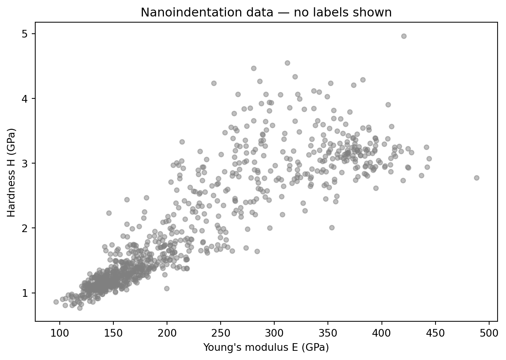
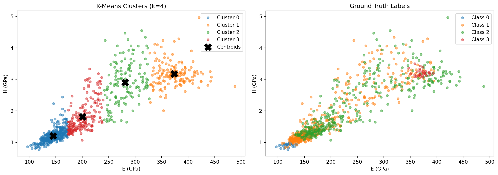

!pip install git+https://github.com/ECLIPSE-Lab/Ai4MatLectures.git "mdsdata>=0.1.5"MFML Week 11: Unsupervised Clustering
K-means on NanoindentationDataset

Learning Objectives
- Distinguish unsupervised from supervised learning
- Apply K-means clustering to materials property data
- Evaluate cluster quality by comparing to ground-truth labels
Setup
import torch
import numpy as np
import matplotlib.pyplot as plt
from sklearn.cluster import KMeans
from ai4mat.datasets import NanoindentationDataset1. Load the Data
dataset = NanoindentationDataset()
print(f"Dataset size: {len(dataset)}")
x0, y0 = dataset[0]
print(f"Sample x shape: {x0.shape} — features: [E (GPa), H (GPa)]")
print(f"Sample y: {y0} (material class)")
X = torch.stack([dataset[i][0] for i in range(len(dataset))]).numpy()
y = torch.tensor([dataset[i][1] for i in range(len(dataset))]).numpy()
print(f"\nX shape: {X.shape}")
print(f"Classes: {np.unique(y).tolist()}")
print(f"Class counts: {dict(zip(*np.unique(y, return_counts=True)))}")Dataset size: 938
Sample x shape: torch.Size([2]) — features: [E (GPa), H (GPa)]
Sample y: 0 (material class)
X shape: (938, 2)
Classes: [0, 1, 2, 3]
Class counts: {0: 30, 1: 513, 2: 364, 3: 31}2. Visualize Raw Data (No Labels)
In an unsupervised setting, we only see the features — no class information.
plt.figure(figsize=(7, 5))
plt.scatter(X[:, 0], X[:, 1], alpha=0.5, s=20, color='gray')
plt.xlabel("Young's modulus E (GPa)")
plt.ylabel("Hardness H (GPa)")
plt.title("Nanoindentation data — no labels shown")
plt.tight_layout()
plt.show()
3. K-Means Clustering (k=4)
kmeans = KMeans(n_clusters=4, random_state=42, n_init=10)
cluster_labels = kmeans.fit_predict(X)
print(f"Cluster sizes: {dict(zip(*np.unique(cluster_labels, return_counts=True)))}")
print(f"Inertia (sum of squared distances to centroids): {kmeans.inertia_:.2f}")Cluster sizes: {0: 444, 1: 163, 2: 139, 3: 192}
Inertia (sum of squared distances to centroids): 373641.22colors = ['tab:blue', 'tab:orange', 'tab:green', 'tab:red']
fig, axes = plt.subplots(1, 2, figsize=(14, 5))
# K-means clusters
for k in range(4):
mask = cluster_labels == k
axes[0].scatter(X[mask, 0], X[mask, 1], alpha=0.5, s=20,
color=colors[k], label=f"Cluster {k}")
axes[0].scatter(kmeans.cluster_centers_[:, 0], kmeans.cluster_centers_[:, 1],
marker='X', s=200, color='black', zorder=5, label='Centroids')
axes[0].set_xlabel("E (GPa)"); axes[0].set_ylabel("H (GPa)")
axes[0].set_title("K-Means Clusters (k=4)"); axes[0].legend()
# Ground truth labels
class_names = ["Class 0", "Class 1", "Class 2", "Class 3"]
for cls in range(4):
mask = y == cls
axes[1].scatter(X[mask, 0], X[mask, 1], alpha=0.5, s=20,
color=colors[cls], label=class_names[cls])
axes[1].set_xlabel("E (GPa)"); axes[1].set_ylabel("H (GPa)")
axes[1].set_title("Ground Truth Labels"); axes[1].legend()
plt.tight_layout()
plt.show()
4. Evaluate Clustering Accuracy
Since K-means does not know which cluster index corresponds to which class, we need to find the best assignment (Hungarian-style best-match counting).
def best_match_accuracy(true_labels, cluster_labels, n_clusters=4):
"""Greedily match each cluster to the true class it most overlaps with."""
n_classes = len(np.unique(true_labels))
# Count matrix: rows = clusters, cols = true classes
count = np.zeros((n_clusters, n_classes), dtype=int)
for c, t in zip(cluster_labels, true_labels):
count[c, t] += 1
# Greedy assignment (good enough for 4 clusters)
assignment = {}
count_copy = count.copy()
for _ in range(min(n_clusters, n_classes)):
best = np.unravel_index(count_copy.argmax(), count_copy.shape)
assignment[best[0]] = best[1]
count_copy[best[0], :] = -1
count_copy[:, best[1]] = -1
mapped = np.array([assignment.get(c, -1) for c in cluster_labels])
acc = (mapped == true_labels).mean()
return acc, assignment
acc, assignment = best_match_accuracy(y, cluster_labels)
print(f"Cluster-to-class assignment: {assignment}")
print(f"Best-match clustering accuracy: {acc:.3f}")Cluster-to-class assignment: {0: 1, 3: 2, 1: 3, 2: 0}
Best-match clustering accuracy: 0.498# Confusion: cluster vs. true label
from collections import Counter
print("\nPer-cluster breakdown (cluster → true class counts):")
for k in range(4):
mask = cluster_labels == k
counts = Counter(y[mask].tolist())
print(f" Cluster {k}: {dict(sorted(counts.items()))}")
Per-cluster breakdown (cluster → true class counts):
Cluster 0: {0: 30, 1: 325, 2: 89}
Cluster 1: {1: 41, 2: 91, 3: 31}
Cluster 2: {1: 66, 2: 73}
Cluster 3: {1: 81, 2: 111}Exercises
- Try
n_clusters=2orn_clusters=6in KMeans. How does inertia change, and do the clusters still make physical sense? - Normalize the features before running K-means:
X_norm = (X - X.mean(0)) / X.std(0). Does clustering accuracy improve? Why might unnormalized features bias the result? - What happens if you add a third (artificial) feature:
X_noise = np.hstack([X, np.random.randn(len(X), 1)]). Does K-means still find the right clusters?